Designs (Level 2)
A Design is an immutable, composable tree of architectural intent. Leaves are rooms, voids, or envelopes; internal nodes compose them with infix operators, subdivide larger shells, or transform whole subtrees. Where a Layout (Level 1) holds an explicit list of spaces with concrete boundaries, a Design holds the recipe that — when compiled with layout — produces those spaces.
This layer sits at the top of KhepriBase's three-level stack (see Levels of Abstraction). Front-end packages such as AlgorithmicArchitecture.jl consume the Layout produced by layout(desc) to generate walls, slabs, doors, windows, columns, and beams.
Why a separate Level 2
The Level-1 Layout is already a good description of a building — it has storeys, spaces, boundaries, connections. So why have a declarative tree on top of it?
The layout is an instance: Space(:kitchen, polygon, …) at (3.5, 4.0, 0.0). To change the layout you have to mutate (or rebuild) that instance at that specific location. The Design tree, by contrast, is a recipe. room(:kitchen, :kitchen, 3.0, 4.0) doesn't commit to where the kitchen sits; that's decided by the enclosing combinators (|, ^, subdivide_x, …). As a result:
- Composition is local. You can build a three-bedroom unit as a fragment and splice it into any larger tree without adjusting coordinates.
- Transformations apply to subtrees.
scale(bed_wing, 1.2)ormirror_x(house)rewrite the whole subtree's geometry without you having to edit leaf coordinates. - Programs write programs. A generative algorithm emits
SpaceDescvalues; the samelayout(desc)compiles them all. - Reasoning is by structure. Tree queries (
desc_width,collect_ids) and constraint checks operate on the recipe before or after compilation.
The trade-off is that the Design layer only expresses what its constructors express. For arbitrary irregular geometry, drop to Level 1 and build a Layout directly.
The three-level stack, concretely
Level 2 (Design) room(:bed, :bedroom, 4, 3) | room(:bath, :bathroom, 2.5, 3)
│ layout(desc)
▼
Level 1 (Layout) Layout with 1 Storey, 2 Spaces at known (x, y)
│ build(layout)
▼
Level 0 (BIM) wall(...), door(...), slab(...) placed in the backendEach arrow is a compilation pass. Each level is independently usable: you can hand-author a Layout without a Design, or place BIM primitives directly without either.
Anatomy of a Design tree
Every node is an immutable value of a concrete struct under the SpaceDesc abstract type. The tree is built from four kinds of nodes:
Leaves — the terminals. Room and Envelope carry dimensions and drop a concrete space into the layout; Void reserves space without producing one.
Composites — two or more children placed relative to each other. BesideX, BesideY, Above are the binary cases; Repeated replicates a unit along an axis; GridLayout tiles a 2D grid with a cell function.
A four-room example tree:

Transforms — one child whose geometry or metadata is rewritten on the way down. Scaled, Mirrored, HeightOverride, PropsOverlay, Annotated.
Subdivision nodes — start from an envelope or zone and carve it into named sub-zones. Subdivided, Partitioned, Carved, Refined, Assigned, SubdivideRemaining. These flip the composition direction: instead of "combine small things into a big thing", they describe "start with a shell and name the pieces".
See Space Descriptions for the full type taxonomy with field-level walk-throughs, and Design Types for the full reference.
Operators and their precedence
Three infix operators make composition concise. Julia's precedence gives ^ > / > |, which matches the spatial intuition:
| Operator | Function | Axis / direction | Precedence |
|---|---|---|---|
| | beside_x | Side by side (x) | Loosest |
/ | beside_y | Front-to-back (y) | Medium |
^ | above | Stacked (z) | Tightest |
That precedence means you can usually drop parentheses:
house =
(living | kitchen) / # ground floor plan
(bed1 | bed2 | bath) # …laid in a row
^ # and stacked below…
(attic_left | attic_right) # …the atticA zero-sized void() is the identity of all three operators, so a | void() === a. That makes it safe to splice placeholders into generated trees.
For the full treatment — mixed axes, depth-mismatch handling, combining with repeat_unit / grid / transforms — see Composition Operators.
Bottom-up vs top-down
KhepriBase lets you describe the same building either way:
- Bottom-up: start with rooms, compose them with
|,/,^. Natural when you already know the individual spaces and just want to lay them out. - Top-down: start with an
envelope, thensubdivide_xorpartition_yit into zones,assignauseto each, and optionallyrefinea zone into finer detail. Natural when the building-mass is the starting point.
The two styles interoperate: you can refine(desc, :zone, subtree -> bottom_up_fragment(subtree)) to replace a coarse zone with a bottom-up sub-layout, or call carve(envelope, :core, :stair; x, y, w, d) to punch a named room into a shell. The two Isenberg tutorials — Isenberg (Bottom-Up) and Isenberg (Top-Down) — build the same building twice to make the trade-offs explicit.
See Top-Down Subdivision for the narrative on the subdivision vocabulary.
Annotations: metadata that survives compilation
Some information about a design is not geometry: "put a door between :kitchen and :livingroom", "this wall faces the street", "don't auto-window the bathroom". These are annotations, attached to any subtree via Annotated wrappers. Layout walks through them transparently, but `collectannotations(desc)` gathers them and hands them to downstream passes (door placement, window placement, element generation).
Because annotations live on the tree, they survive copying and transformation: scaling a wing scales both the walls and the "connect these rooms with an arch" instruction. See Annotations for the reference.
A no_windows(:kitchen) annotation suppresses the automatic windows that would otherwise appear on the kitchen's exterior face:

Tree queries: introspect without compiling
Before calling layout(desc) you can already ask the tree about its dimensions and contents:
desc_width(desc),desc_depth(desc),desc_height(desc)— bounding dimensions of the composed tree.collect_ids(desc)— every named space id in declaration order.collect_annotations(desc)— every annotation attached anywhere in the tree.update_room_by_id(desc, id, f)— return a new tree with the named room replaced byf(room).
These are the tools constraint fixers and generators use to manipulate designs without reaching into internals.
Where to go next
- Space Descriptions — the tree types (leaves, composites, annotations, subdivision nodes) and how they compose.
- Composition Operators — infix operators (
|,/,^), functional forms, precedence, depth mismatches, repetition, transforms. - Top-Down Subdivision — starting from an envelope and partitioning into zones (
subdivide_x,split_x,partition_x,carve,refine,assign,subdivide_remaining). - Constraints (concept) — validating a design against typed rules.
Reference
- Design Types — every
SpaceDescstruct - Leaf Constructors —
room,void,envelope,polar_envelope - Combinators —
beside,above,grid,repeat_unit, transforms, infix operators - Subdivision — top-down operations
- Annotations —
connect,connect_exterior,disconnect,no_windows - Tree Queries —
desc_width,collect_ids,update_room_by_id, … - Layout Engine —
layout(::SpaceDesc)and the Level-1 types (Space,Storey,Layout) it produces - Adjacencies —
adjacencieson the producedLayout - Constraints (reference) — library constraints validating the produced
Layout